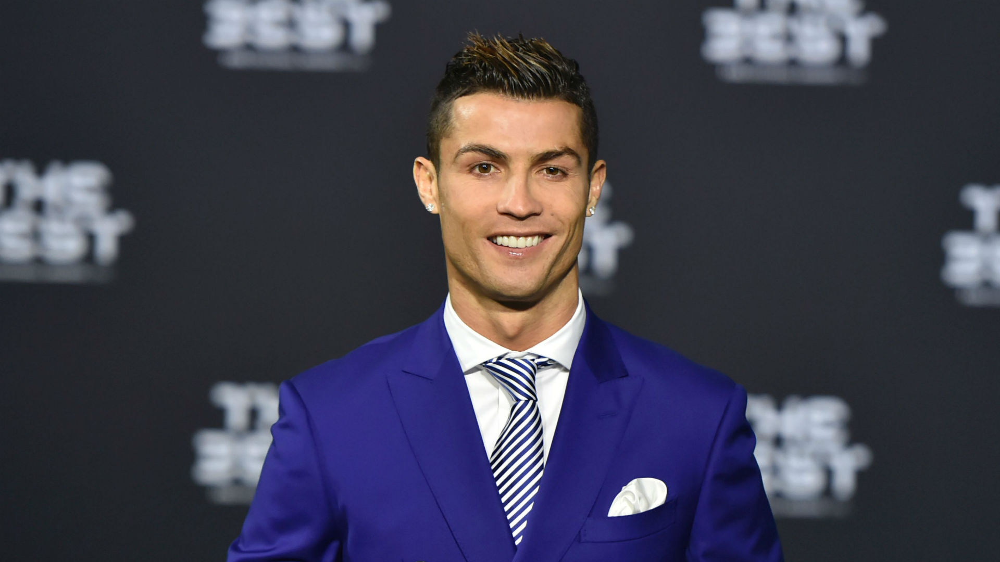
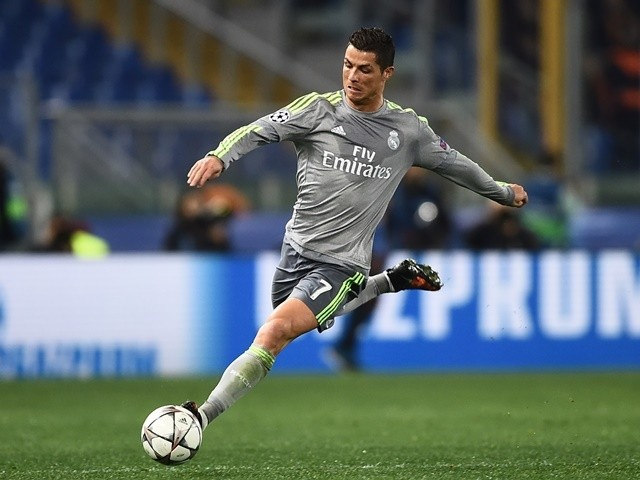
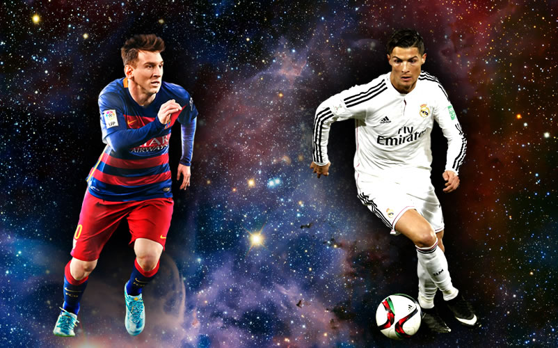

Cristiano Ronaldo dos Santos Aveiro, ComM, GOIH (Portuguese pronunciation: [kɾiʃ'tjɐnu ʁuˈnaɫdu], born 5 February 1985) is a Portuguese professional footballer who plays for Spanish club Real Madrid and the Portugal national team. He primarily plays as a forward, but has also been deployed as a winger and serves as captain for Portugal. In 2008, he won his first Ballon d'Or and FIFA World Player of the Year awards. Ronaldo then won the FIFA Ballon d'Or in 2013 and 2014. In 2016, he received his fourth Ballon d'Or, the most for a European player in the history of the award, and the inaugural Best FIFA Men's Player. In 2015, Ronaldo scored his 500th senior career goal for club and country.
Often ranked the best player in the world and widely regarded as one of the greatest of all time, Ronaldo was named the best Portuguese player of all time by the Portuguese Football Federation, during its 100th anniversary celebrations in 2015. He is the only player to win four European Golden Shoe awards. One of the most marketable athletes in sport, in 2016 Forbes named Ronaldo the world's best paid athlete. In June 2016, ESPN ranked him the world's most famous athlete.
Ronaldo began his senior club career playing for Sporting CP, before signing with Manchester United at age 18 in 2003. After winning his first trophy, the FA Cup, during his first season in England, he helped United win three successive Premier League titles, a UEFA Champions League title, and a FIFA Club World Cup. By age 23, he had received Ballon d'Or and FIFA World Player of the Year nominations. He was the subject of the most expensive association football transfer when he moved from Manchester United to Real Madrid in 2009 in a transfer worth €94 million ($132 million). In Spain, he has since won one La Liga title, two Copas del Rey, two Champions League titles, and two Club World Cups. Ronaldo holds the record for most goals scored in a single UEFA Champions League season, having scored 17 goals in the 2013–14 season. In 2014, Ronaldo became the fastest player to score 200 goals in La Liga, which he accomplished in his 178th La Liga game. He is the only player in the history of football to score more than 50 goals in a season on six consecutive occasions. In 2015, Ronaldo became the all-time top goalscorer in the UEFA Champions League, and he also became Real Madrid's all-time leading goalscorer. He is the second highest goalscorer in La Liga history behind Lionel Messi, his perceived career rival.
Ronaldo made his international debut for Portugal in August 2003, at the age of 18. He is Portugal's most capped player of all time with over 130 caps, and has participated in seven major tournaments: four UEFA European Championships (2004, 2008, 2012 and 2016) and three FIFA World Cups (2006, 2010 and 2014). He is the first Portuguese player to reach 50 international goals, making him Portugal's all-time top goalscorer. He scored his first international goal in Euro 2004 and helped Portugal reach the final. He took over captaincy in July 2008, and he led Portugal to the semi-finals at Euro 2012, finishing the competition as joint-top scorer. In November 2014, Ronaldo became the all-time top scorer in the UEFA European Championship (including qualifying) with 23 goals. At Euro 2016, he became the most capped player of all-time in the tournament, the first player to score at four consecutive European Championship finals, and also equalled Michel Platini's all-time record for most goals scored in the competition. Ronaldo lifted the trophy after Portugal defeated France in the final, and he received the Silver Boot as the second-highest goalscorer of the tournament.